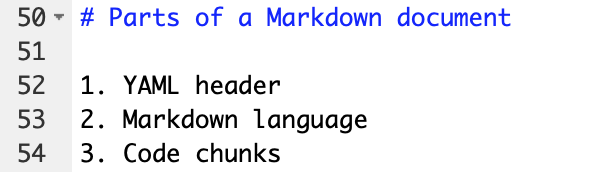
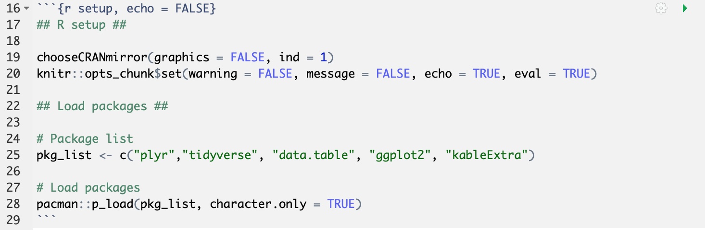

Chapter 2 Parts of a document
- YAML header
- Markdown
- Code chunks
2.1 YAML header
The first part of your document is called the YAML header. This is where you set the global options for the output and formatting. The YAML header appears at the top of your document, and is defined by three dashes/hyphens at the beginning and end.
In the example below, I show the YAML header for a set of revealjs slides. I’ve included basic information, like the title and date, in addition to template-specific parameters, like whether there should be slide numbers or not. Section 6.2 has more information on setting YAML formatting parameters.
test2.2 Markdown
The plain text-formatting syntax of R Markdown allows for conversion to multiple document types. The image below shows an example of the basic syntax. The # denotes a header, while the numbered list behaves like you would expect one to in Word. However, unlike Word, the actual numbers don’t matter; I could’ve put all 1’s here, and R Markdown would’ve formatted them for me. Go to Chapter 5 for more information on markdown syntax.

2.3 Code chunks
Code chunks are one of the core features of R Markdown. Code chunks are set apart from markdown by three backticks at the beginning and end. In curly brackets after the first set of backticks, you specify the coding language you want to use (here, it’s R, with a lowercase r).
You can also add other arguments, like a name for the chunk (here, it’s setup), and specific chunk options. The example I’ve provided below is the first chunk in my R Markdown document. It establishes the default chunk options with knitr::opts_chunk$set. You can see that while I’ve set echo = TRUE globally, so that all of my code chunks appear in the document by default, I set echo = FALSE for this specific chunk. A full list of chunk options can be found here.
# This is a chunk of R code that adds an image
knitr::include_graphics("images/example_chunk.png")
There are multiple ways to run code chunks to test them in RStudio before creating your output. You can run code like you would in R by highlighting the relevant lines of code and hitting CTRL/command + enter. You can also hit the green “play” button in the upper right-hand corner of the chunk.
Each chunk is an island, so if you haven’t run a previous chunk that contains some variable you need in the chunk you want to run, it’ll throw an error. At the top right of your open .Rmd document in RStudio, you’ll also see a Run dropdown menu. There, you can choose different options for running certain code chunks.
Tip: you can use the chunk option “cache = TRUE” for very time-consuming chunks, but there are some catches as described here.